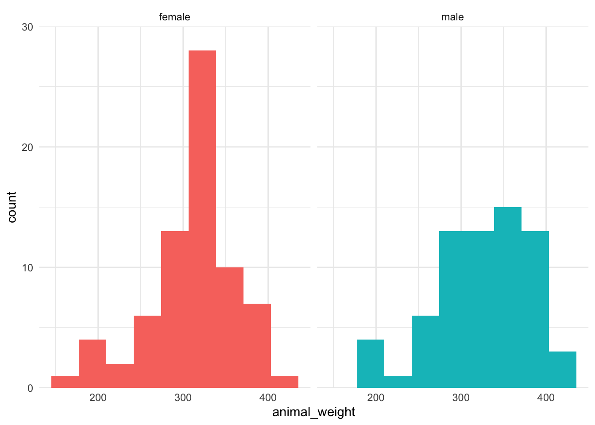
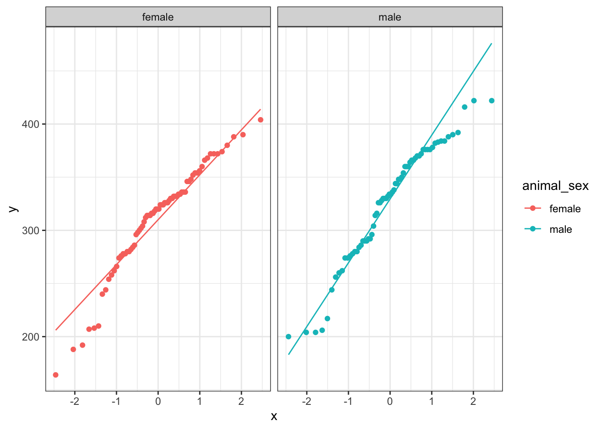
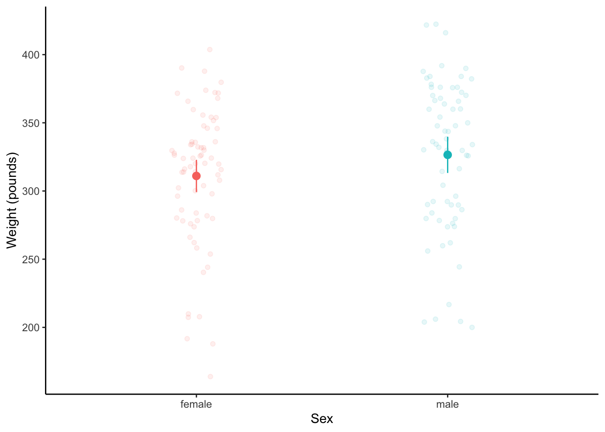
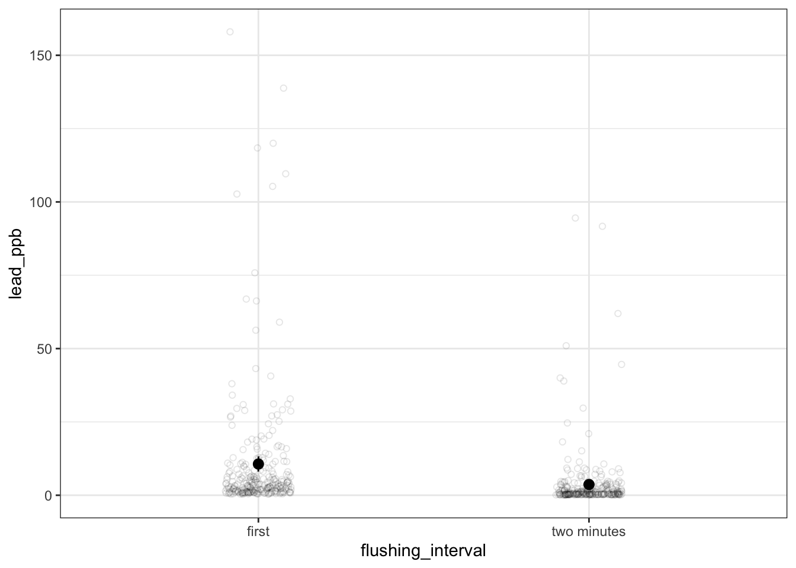

# read in packages
library(tidyverse)
# Bison from Konza Prairie LTER
knz_bison <- read_csv("knz_bison.csv")1. Summary
Packages
tidyverse
readxl
janitor
Operations
New functions
- create new columns based on data in existing columns using
mutate()andcase_when()
- visualize QQ plots using
geom_qq()andgeom_qq_line()
- create multi-panel plots using
facet_wrap()
- create jitter plots using
position = position_jitter()withingeom_point()
- visualize summary statistics using
stat_summary()
- compare group variances using
var.test()
- do t-tests using
t.test()
Review
- read in data using
read_csv()
- chain functions together using
%>%
- clean column names using
clean_names()
- select columns using
select()
- make data frame longer using
pivot_longer()
- rename columns using
rename()
- group data using
group_by()
- summarize data using
reframe()
- calculate standard deviation using
sd()
- calculate t-values using
qt()
- visualize data using
ggplot()
- create histograms using
geom_histogram()
- visualize confidence intervals using
geom_pointrange()
General Quarto formatting tips
If you’re working in the source editor (as we did in class), you can control the appearance of text, links, images, etc. using this guide.
Data source
The bison data is a subsetted version of the bison weight data from Konza Prairie as presented in the lterdatasampler package (more about the data here). The Flint water data is from a massive citizen science sampling effort done in 2015 by the residents of Flint, Michigan - read more about this project here and download the data here.
2. Code
1. Set up
2. Cleaning the bison data
knz_bison_clean <- knz_bison %>%
mutate(animal_sex = case_when(
animal_sex == "F" ~ "female",
animal_sex == "M" ~ "male"
))The data frame should look something like this:
head(knz_bison_clean)# A tibble: 6 × 8
data_code rec_year rec_month rec_day animal_code animal_sex animal_weight
<chr> <dbl> <dbl> <dbl> <chr> <chr> <dbl>
1 CBH01 2011 10 27 O-101 female 316
2 CBH01 2011 10 27 O-102 female 266
3 CBH01 2011 10 27 O-103 male 290
4 CBH01 2011 10 27 O-104 male 326
5 CBH01 2011 10 27 O-105 male 336
6 CBH01 2011 10 27 O-106 male 350
# ℹ 1 more variable: animal_yob <dbl>3. Exploring the bison data
a. Histograms
ggplot(knz_bison_clean,
aes(x = animal_weight,
fill = animal_sex)) +
geom_histogram(bins = 9) +
scale_y_continuous(expand = c(0, 0),
limits = c(0, 30)) +
facet_wrap(~animal_sex) +
theme_minimal() +
theme(legend.position = "none") 
b. QQ plots
ggplot(knz_bison_clean,
aes(sample = animal_weight,
color = animal_sex)) +
geom_qq() +
geom_qq_line() +
theme_bw() +
facet_wrap(~animal_sex)
c. Jitter plots and dot and whisker
ggplot(knz_bison_clean,
aes(x = animal_sex,
y = animal_weight,
color = animal_sex)) +
geom_point(position = position_jitter(width = 0.1,
seed = 1),
alpha = 0.1) +
stat_summary(geom = "pointrange",
fun.data = mean_cl_normal) +
labs(x = "Sex",
y = "Weight (pounds)") +
theme_classic() +
theme(legend.position = "none")
3. t-test
a. check variances
var.test(animal_weight ~ animal_sex,
data = knz_bison_clean)
F test to compare two variances
data: animal_weight by animal_sex
F = 0.84041, num df = 71, denom df = 67, p-value = 0.4705
alternative hypothesis: true ratio of variances is not equal to 1
95 percent confidence interval:
0.5212348 1.3505428
sample estimates:
ratio of variances
0.8404117 b. do the t-test
t.test(animal_weight ~ animal_sex,
data = knz_bison_clean,
var.equal = TRUE)
Two Sample t-test
data: animal_weight by animal_sex
t = -1.7396, df = 138, p-value = 0.08416
alternative hypothesis: true difference in means between group female and group male is not equal to 0
95 percent confidence interval:
-33.028782 2.112115
sample estimates:
mean in group female mean in group male
311.0417 326.5000 c. writing
There is no significant difference in weights between male and female bison calves (two-sample t-test, t(138) = -1.74, p = 0.08).
3. Paired t-tests
a. read in data
# read in packages here
library(readxl)
library(janitor)
# Flint water lead data
flint_pb <- read_xlsx("Flint-Samples-WORKING-COPY.xlsx",
sheet = "Samples from Flint Water homes")b. clean and wrangle the data
flint_pb_clean <- flint_pb %>%
clean_names() %>% # clean names using janitor function
select(sample_id, pb_bottle_1_ppb_first_draw, pb_bottle_2_ppb_45_secs_flushing, pb_bottle_3_ppb_2_mins_flushing) %>% # select columns of interest
pivot_longer(cols = pb_bottle_1_ppb_first_draw:pb_bottle_3_ppb_2_mins_flushing) %>% # make data frame longer
rename(flushing_interval = name,
lead_ppb = value) %>% # rename columns
mutate(flushing_interval = case_when(
flushing_interval == "pb_bottle_1_ppb_first_draw" ~ "first",
flushing_interval == "pb_bottle_2_ppb_45_secs_flushing" ~ "45 seconds",
flushing_interval == "pb_bottle_3_ppb_2_mins_flushing" ~ "two minutes"
)) %>% # use mutate and case when to recode levels in flushing interval column
filter(flushing_interval != "45 seconds") # take out 45 seconds intervalc. plot the data with confidence intervals
ggplot(flint_pb_clean,
aes(x = flushing_interval,
y = lead_ppb)) +
geom_point(position = position_jitter(width = 0.1, seed = 1),
alpha = 0.1,
shape = 21) +
stat_summary(geom = "pointrange",
fun.data = mean_cl_normal) +
theme_bw()
d. Summarize the data
flint_pb_summary <- flint_pb_clean %>%
group_by(flushing_interval) %>%
reframe(mean = mean(lead_ppb),
n = length(lead_ppb),
sd = sd(lead_ppb),
se = sd/sqrt(n),
tval = qt(p = 0.05/2, df = n - 1, lower.tail = FALSE),
margin = tval*se,
ci_lower = mean - margin,
ci_higher = mean + margin)e. Do a paired t-test
t.test(lead_ppb ~ flushing_interval,
data = flint_pb_clean,
paired = TRUE)
Paired t-test
data: lead_ppb by flushing_interval
t = 6.3748, df = 270, p-value = 7.891e-10
alternative hypothesis: true mean difference is not equal to 0
95 percent confidence interval:
4.827963 9.142612
sample estimates:
mean difference
6.985288 f. Writing
In words: There was a significant difference in the amount of lead in parts per billion detected between samples collected immediately after turning the water on and after 2 minutes (paired t-test, t(270) = 6.37, p < 0.001).
On average, samples collected after 2 minutes had lead levels of 10.6 ppb [95% CI: 8.07, 13.2], while samples collected immediately had lead levels of 3.66 ppb [95% CI: 2.40, 4.92].